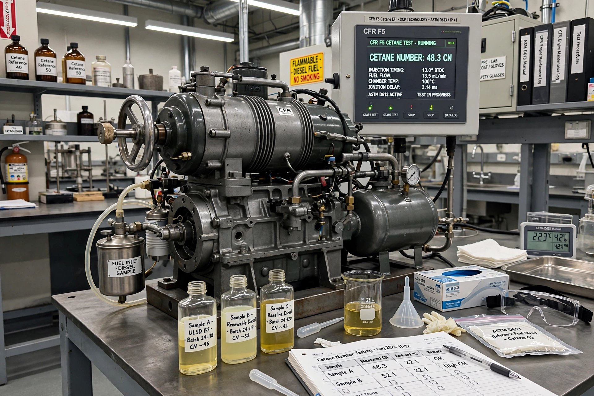

Cetane number (or CN) is an indicator of the combustion speed of diesel fuel and the compression needed for ignition. It measures ignition delay: the higher the cetane number, the more readily the fuel auto-ignites in a compression-ignition engine.

The scale is defined by mixtures of cetane (n-hexadecane, CN = 100, short ignition delay) and isocetane (heptamethylnonane, CN = 15, long delay). A fuel's cetane number is the percentage of cetane in a matching reference mixture tested in a standard CFR engine. Typical road diesel has a cetane number around 40–55; the European EN 590 standard requires at least 51, while US ASTM D975 requires at least 40.
Higher cetane improves cold starting, reduces noise and white smoke, and lowers some emissions; excessively high values give little benefit. Biodiesel typically has a higher cetane number than petroleum diesel. Cetane is the diesel analogue of the octane rating for petrol, but with opposite desirability of auto-ignition.